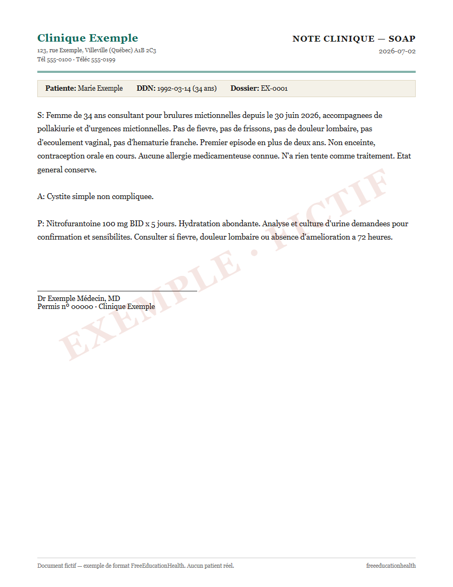
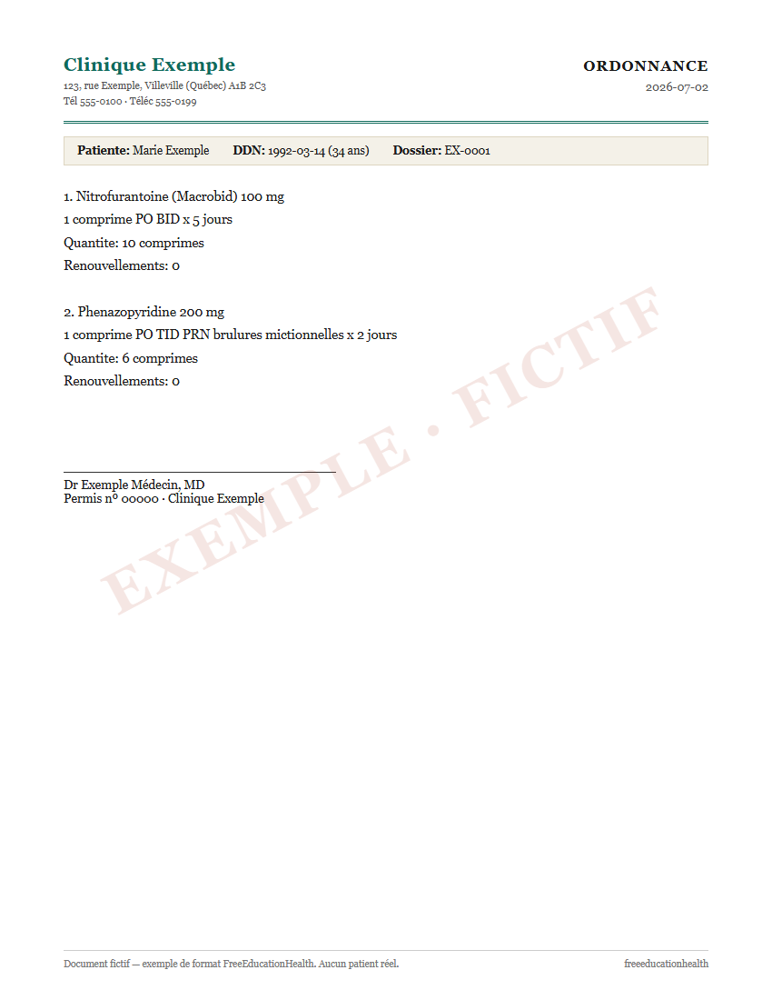
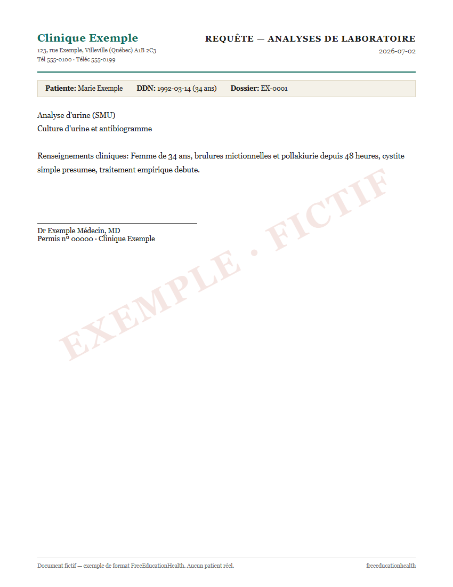
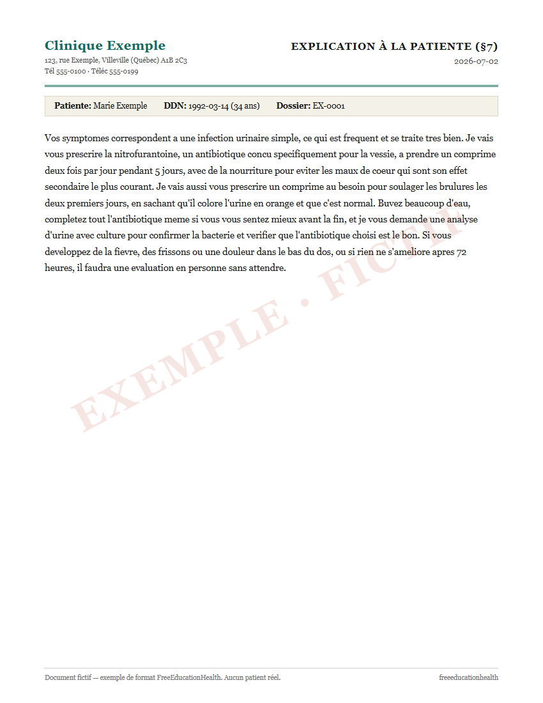
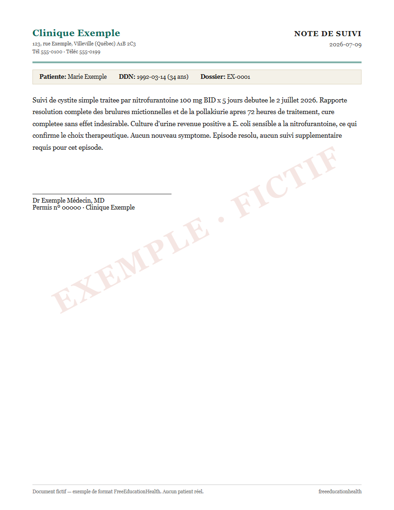
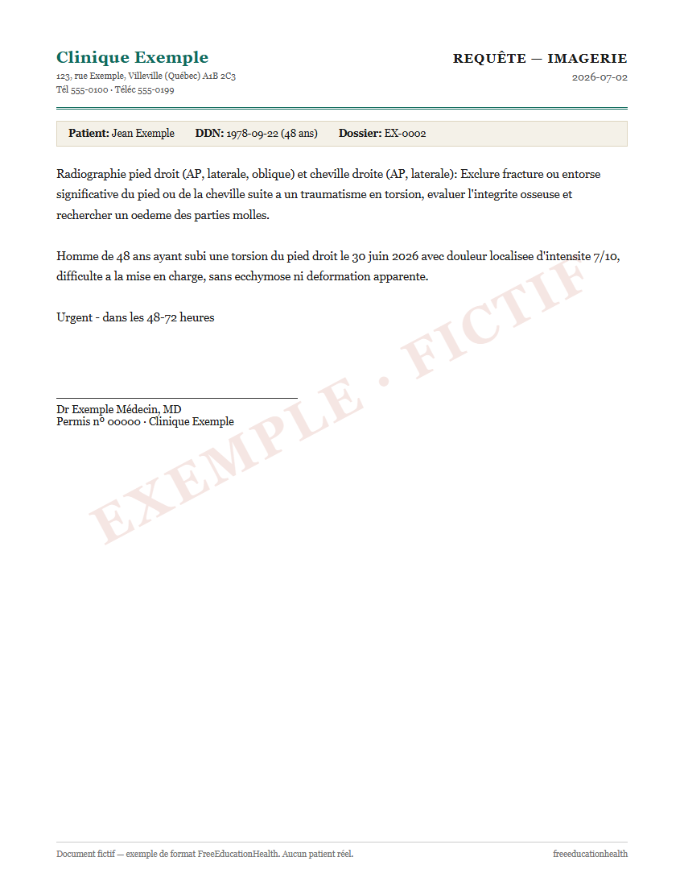
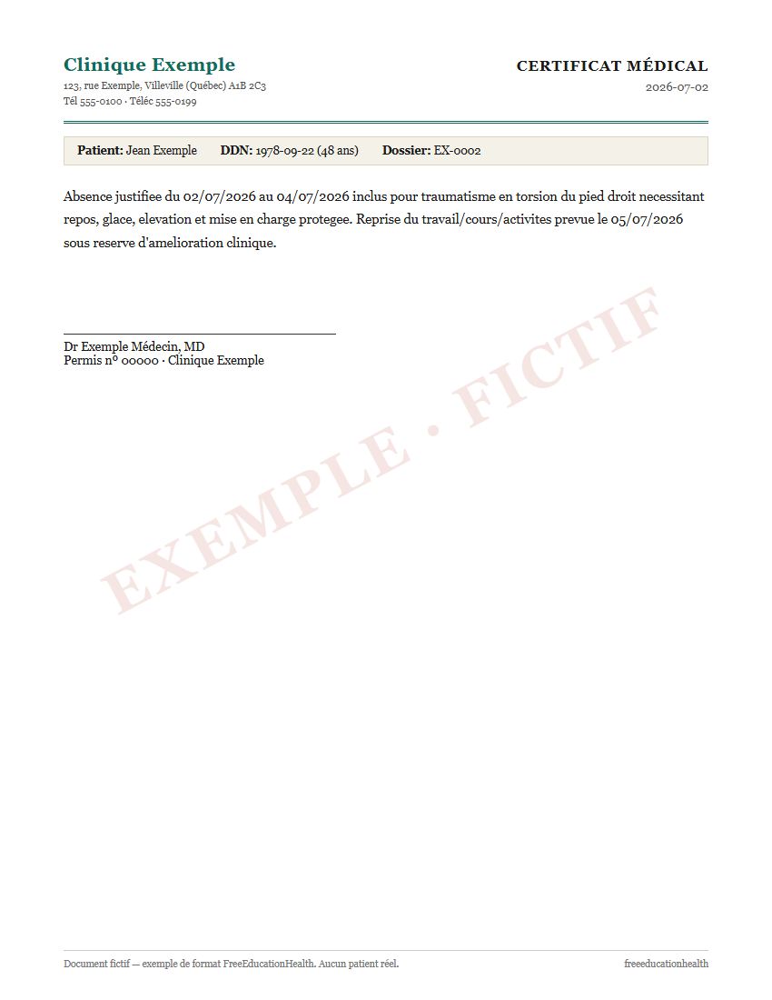
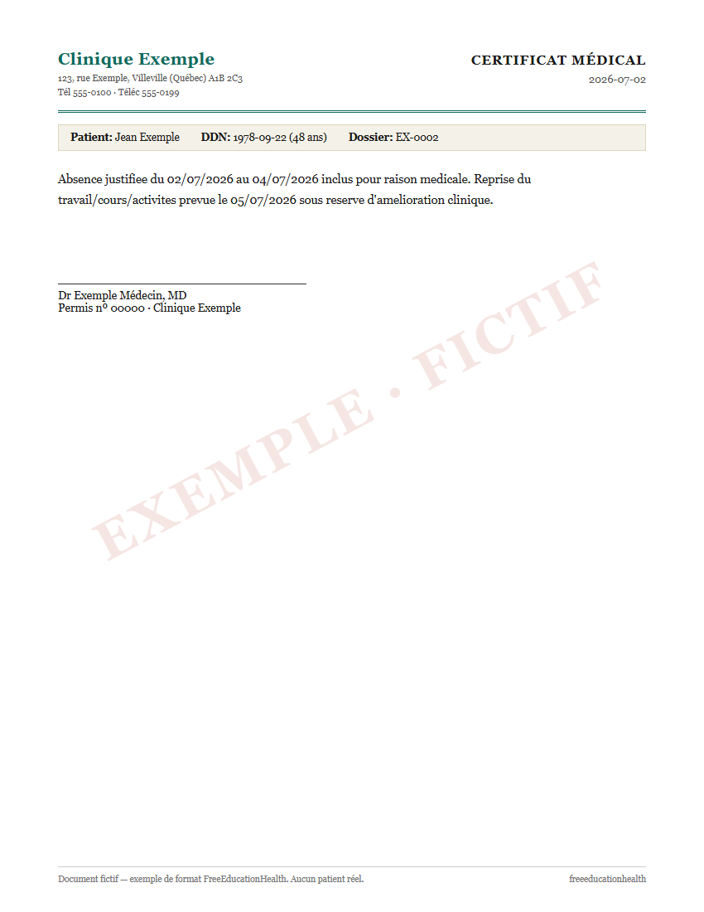
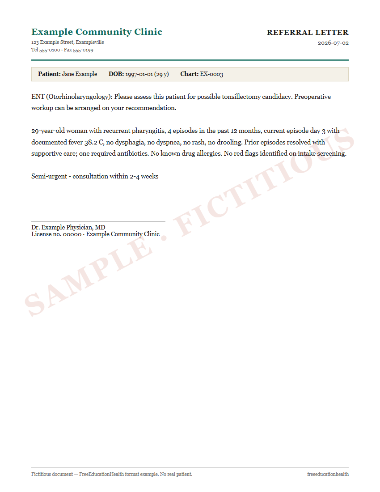

What the documents look like
Every document the AI drafts, shown at real size so you know exactly what you are getting before you configure anything. Three fictitious patients at a fictitious clinic — every name, number, and license here is a placeholder, and each page carries a watermark saying so. The physician reviews and signs every real document; the AI only drafts.
Case 1 — Marie Exemple, 34: a simple bladder infection
One telemedicine consultation, five documents: the chart note, the prescription, the lab requisition, the message the patient reads, and the follow-up note a week later.





Case 2 — Jean Exemple, 48: a twisted foot
A telemedicine case that needs in-person imaging: the requisition that gets him seen, and the work-leave certificate — in both variants — that lets him arrange it without pressure.



Case 3 — Jane Example, 29: recurrent throat infections
The case from the physician worked-example guide — here is the referral that sends her to the specialist.

Start as a physician Get the templates All published methods